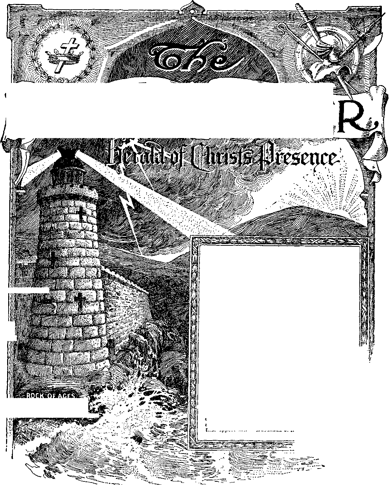

W*^
No. 24
Upon the earth distress of nations with perplexity; the sea and the waves (the restless, discontented) roaring; men’s hearts failing them for fear and for lookimr tn the things coming upon the earth (society); for the powers of the heavens (ecclesiasticsm) shall be shaken . . When ye see these things begin to come to know that the Kingdom of God is at hand. Look up, ilit up your heads, rejoice, for your redemption draweth nigh.—Matt. 24:33; Mark 13:29; Luke^21‘25-3^
y
i
Other founSatlon can’
-no man _
,'a,ransom'foR al®<»3
Vol. XLVI
Semi-Monthly
Anno Mundi 6054 —December 15, 1925
CONTENTS
PEACE
God The His
and Goon Will of Peace ...........
Interim ............
Name .................
Peace on Earth ...............................
Good Will .........................................
Five Men Believe on Jesus ...........
An Inadvertent Omission (Letter) Jesus and Nicodemus .......................
Prayer-Meeting Text Comments ... Money Lost in the Mails ......-......
Mid-Winter Conventions ..............
Calender for 1926 ............................
Portuguese Service .........................
.... 371 .... 372 .... 374 .... 375 .... 375 .... 376 .... 377 .....379
.... 330
.... 3S2
.... 370 ... 370 ... 370 ... 370
“I will stand upon my watch and will set my foot upon the Tower, and will watch to see what He will say unto me, and what answer I shall make to them that oppose me.”—Hahakkuk 2; 1.
©W.T.B.&TS
fpHIS Journal is ono of the prime factors or instruments in the system of Bible instruction, or “Seminary Extension". now being A presented m all put ts of the civilised world by tiie Watch Tov.i.u Bir.tE & Tract Sucir.TT, chartered A. D. 1884, “For the Promotion 01 Christian Kuov.leuce". It not only serves as a class room where Bible students may meet in the study of the divine Word but alsu ns a channel of communication through which they may be reached with announcements of the Society’s conventions and of the coming of its traveling representatives, styled “I’ilgrlm.-.", and refreshed with reports of its conventions.
Our “Bcrcan Bessons" are topical rehearsals or reviews of our Society's published Studies most entertainingly arranged, and Very helnful to all who would merit the only honorary degree which the Society accords, viz., Verbi Dei Minister (V. D. M.), which translated Into English is Minister of Cod't Ik ord. Our treatment of the International Sunday School Bessons is specially for the older Bible stttdeuts and teachers. By some this feature is considered indispensable.
This journal stands firmly for the defense of the only true foundation of the Christian’s hope now being no generally repudiated —redemption through the precious blood of “the man Christ Jesus, who gave himself a rantom (a corresponding price, a substitute] for all". (I Peter 11 Timothy 2: Cl Building up on this sure foundation the gold, silver and precious stones (1 Corinthians 3: Ills: 2 Peter 1:5-11) of the Word of God, its further mission is to “make all see what is the fellowship of tbe mystery which. . Jias been hid in God, ... to the intent that now might be made known by the church tbe manifold wisdom of God”—“which in other ages was not made known unto the sons of men as it is now revealed”.—Ephesians 3:0-9,10.
It stands free from all parties, sects and creeds of men. while it seeks more and more to bring its every utterance into fullest subjection to the will of God in Christ, as expressed in tbe holy Scriptures. It is thus free to declare boldly whatsoever the Bord hath s|>okei>—according to tbe divine wisdom granted unto us to understand his utterances. Its attitude Is not dogmatic, but eonlident; lor we know whereof we affirm, treading with implicit faith upon the sure promises of God. It is held as a trust, to be used only in his service: lienee our decisions relative to what may and what may not apixvtr in its columns must be aenruing to our judgment of bis good pleasure, the leaching of Ins Word, for th" unbuilding of Ins people in grace and knowledge. And we not only invite but urge our leaders to prove all its utterances by tbe infallible Word to wliieu relereme is constantly made to facilitate Such resting.
TO US THE SCRIPTURES CLEARLY TEACH
That the church is “the temple of the living God", peculiarly “Ins workmanship”; that its construction has been In progress throughout the gospel ace—ever since Christ became the world's Redeemer and the Chief Corner Stone of his temple, through which, when finished, God s blessing shall come “to all people”, and they find access to him.—1 Corinthians 3: 1G, 17 ; Ephesians 2; 20-22; Genesis 28: 14 ; Galatians 3 : 29.
That meantime the chiseling, shaping, and polishing of consecrated believers in Christ’s atonement for sin, progresses: and when the last of these “living stones", “elect and precious,” shall have been made ready, the great Hasler Workman will bring all together in the Inst resurrection: and tbe temple shall be filled with bis glory, and be the meeting place between God and men throughout the Millennium.—lie vein tiou 15 : 5-8.
That the basis of hope, for the church and the world, lies in the fact that “Jesus Christ, by the grace of God, tasted death for every man.” “a ransom for all,” and win be "the true light which lighted every man that someth <nlo the world", “la due time".— Hebrews 2:9; John 1:9; 1 Timothy 2:3, C.
That the hope of tbe church is that she iiihv be like her laird, “sec bim as he is,” be "partakers of the divine nature',* and share his glory as bis joint-heir.—1 Jobu 3:2; John 17:24; Itouiaus 8:17; 2 Peter 1:4.
Tnat the present mission of the church is the perfecting of the saints for tiie future work of Servian: to develop in herself every grace ; to he God's witness to tbe world ; and to prepare to be kings and priests in the next age.—Ephesians 4:12; -Uultbew 24: 14; lievelatiou 1: G; 20:6.
That the hope for the world lies in the blessings of knowledge and opportunity to be brought to oil bv Christ's Millennial kinrdon, tha resrituuon of all that was lost in Adai.i. to all tne willing nr.d obedient, at the bands of their lledeemcr and ,i:s glorified church, when all the willully wicked will be destroyed.—Acts 3:1923; Isaiah 33.
Published bv
18 CONCORD STREET on BROOKLYN, NX, U SA-
Foreign Offices: Jtrithh; 34 Craven Terrace. Lancaster Gate, Loudon W. 2; (uikhIiuh: 3S-40 Irwin Aveuue, Toronto. Ontario;
495 (‘ullin* St., Melbourne. Australia; aouth African;
6 Lche SU, (.'ape 'Joun. South Africa.
Pi.i.xm: Ai»i»icl.^ uil Socnnr in Lvi:kt Case.
F?;.4A7,) M\ PKll'l, 1 Mri.’n Sriii.s, : I anadI AM* AlIM I.Li..i\H>ih luREP.N. iiKEAT BUJaAl'.. AI S IKA l.Ab. A,
AMi mhu Airp.'i ?• AiiiiTiam rchniIan«-e> mmmiM hr ni.y/r oy Exhn*'"< or iwul Money vr<i<»ix. or by Bap’: 1 »ral t. < .-juathan. l'»mi-b. Sonf h Ai rivan. mid A a "inda Mau remittances .should he inaue to bi a hi h olitec't uuIh. Remit ranges troin scattered foicign territory mav be made to the Brooklyn 0(111*0. but by Inlvniational 1‘ostal Money Orders only. (’Foh'k/h haHMftliOHt of thie journal appear tn eerrnd tannufiaee)
Editorial Committee: This journal is published under the suj»crv]siou ot ;i.) t .lnonai summit lee. at least throe of whom have rend and 8PI»nnas irmh p.p h and every article appearing in ihe*e colnmna. The names of tin* editorial committee arc: J. F. ItVTiiuiiioku, W. E. Van AMnvncn, J. Hemert, K H Baiikmi. E. J- u>>». 3euns to the Lord’s Poor: All Bible students who. by reason of u.u «,.<• 01 oilier iuiiiiiiii) or adversity, arc unable to pay for this jn'.ini.ii, will oc bui>pned Hee it they send a postal card each Mny statins their case and recinestinz auch provision. We arc not only willins, but anxious, that all sncli be on our list continually and in touch with the Berenn studies. _
Aofn c to titibeci ihers: We do not, as a rule, send a card of acknowb edemenf for a renewal or fnr a Dew subscription. Receipt and entry of renewal arc indicated within a month by change in expire* tion date, as shown on wrapper label. ___________________________
Entered as Second Cl*** Matter az Brooklyn, N.Y. Poitofnce.. Act 1679^
MONEY LOST
We find that letters containing currency frequently fall to rciieli us. There secius to be a systematic riding of the mails throughout the country, so that it is no longer safe to send remittances except by means of money orders or bank drafts. Please do not send currency or personal checks. Always keep a record of the numliers, dates and amounts of all money orders or drafts which you send, M that tbe money may be recovered in event of loss.
1926 CALENDAR
With pleasure we announce that the 192G calendar is a very beautiful design. The picture is printed in five colors. On one side of the picture will be the year text. On the other side a pad containing the weekly text and the following description of the symbolic representation, to wit:
It is impossible for man to describe God's kingdom. lie speaks through his mention. which Testifies of bis mii-esty. (Ps.ihu 19: l-<i> *1 l»e great mountain m the distance, ream.a its hoar., bead above toe cloud.-, symbolically sneaks of the bonvenh phase of God's kingdom. Pcrpctu.il .snow pictures the puntv and bol.ness inercof The red in tn-y miii-i oi The snow tells of The blood of (..si - beloved Sou, the basis lor the kingdom erected for tbe beu-cm of man
(bids prophet (Zechariah 14:4) gives a beautiful description ot tlio kingdom which mny be applied to the two mountains tn the foreground and to the valley between. Imo the valley of blessing the people will gather during the Mlllemiial reign and receive blessings nt the hand of the Boid.
The castle at the base of tbe mountain pictures the nbodo of tlio earthly representatives of the kingdom, from which orders of the new government will issue
The stream ot water proceeds from the throne of God nnd the trees shall be for the healing of the people. (Revelation 22:1 ; Amos 5:24; Isaiah 61 :3: Ezekiel 47 ; 321 The whole earth shall be tilled with tbe glory fit the Ixird. (llabnkkuk 2:14) Green i« a svmbol of eternal life. The obedient shall live for ever. "On earth peace, good will toward men."
“Praise God in hie sanctuary."—Psalm 150.
The calendar is approximately 22 J x 13 inches. It will be ready for shipment about December 1st. The Watch Towes will carry a comment throughout the year on the week’s text. The calendar will retail at 35<, and In quantities of fifty or more, at 25< charges prepaid.
MID-WINTER CONVENTIONS
A four days' convention will lie held at Tampa, Florida, January 21st to 24tl. inclusive. This convention will be addressed* by a number of the pilgrim brethren, Brother Kutherfoni being there on Sunday tbe 24th.
A four days' convention will be held at Dallas, Texas, January 28th to 31st Inclusive. A number of the brethren will address this convention. Brother Rutherford will be at the convention on the 31st.
These are the only two conventions which the Socurrr is holding in the South this winter. Seep. 383 for secretaries.
Vol. XLVI December 15, 1925 No. 24
"Glory to God in the highest, and on earth peace, good will toward men”—Luke S: 1^.
IT WAS in the autumn season, at night time, more than nineteen centuries ago that the angelic train from heaven arrived and stood over the modest little city of Bethlehem. A band of shepherdmen were guarding their sheep from unfriendly attacks. They knew nothing of the coming of this heavenly host; and when the leading one stood out to announce the birth of the holy child, these watchers were sore afraid. To allay their fears that heavenly messenger said to them: “Fear not: for, behold, I bring you good tidings of great joy, which shall be to all people For unto you is bom this day, in the city of David, a Savior, which is Christ the Lord.” (Luke 2.10,11) From the presence of the Eternal God these holy angels had come.
2 Nine months before, the Logos had left the selfsame heavenly court, having laid aside his spirit nature to become the Savior of the world. The special messenger from heaven had made announcement to the shepherds that the Savior was born; and then the mighty host with ecstatic joy together sang: “Glory to God in the highest, and on earth peace, good will toward men.” Never before had ears of men heard such wondrous song. Down through the corridors of the ages its sweet melody has everberated. Now at the coming of the new day its meaning is understood more clearly than a. any time past. That anthem, sung by the hosts or heaven, was indeed a prophecy; and its meaning to the people must in due time be understood. That due time is beginning.
2 A prophecy is the foretelling of future events It is not intended that men should understand a divine prophecy at the time it is uttered. In God’s due time those of reverential mind and devout heart shall understand.
4 The three prominent parts of this prophecy stated in the order of importance are: (1) The honor, good name and fame of Jehovah God; (2) peace on earth; and (3) good will toward men. In every language and tongue this prophetic message has been read by millions of people, but few have understood and less have profited by that understanding. Blessed are they who hear and understand and heed.
6 The apostles of Jesus preached the message of peace and salvation, and many have heard and professed to believe the same. Since the year 800 A. D., even the nar-tions have professed to be Christian nations. Each Christmas season the preachers have preached some kind of peace sermon; and the people have in some measure expressed a little good will toward one another by giving gifts to each other, particularly to relatives and friends from whom they expect to receive something in return. Some of the great financiers on Christmas occasions have loosened up their purse strings a little, and have given some temporary relief to the poor that they might receive the plaudits of men. The politicians, wielding the power to rule, have on such occasions released some unfortunate ones from prison cells - and at these seasons the ecclesiastics have boasted of the greatness and generosity of their allies, the commercial and political factors, while with honeyed words upon their lips they have held forth their hands to receive more gifts from the people. Christmas has been well marked by hypocrisy. But with these governing factors, the commercial, political and ecclesiastical, the name of God has not been honored; neither by their combined efforts has peace come to the people, nor does there now exist much good will amongst men, one toward another.
* Only seven years ago the so-called Christian nations for a time ceased firing at each other; and when the smoke of battle lifted, those who had fallen as the result o± the expressed malice of the governing factors, were numbered by the millions. The aftermath is even worse. Millions of widows and orphans remain to mourn the loss of their beloved ones, who fell because of ill will amongst men. Malicious hatred amongst men has increased an hundredfold since the World War, and the holy name of God has been defamed even more than prior thereto by the ecclesiastics and others who claim to represent the Lord.
7 Now all the nations called Christian are preparing for a war more terrible and bitter than ever was before known. A gruesome cloud appears on the horizon. From all the leading nations in the four quarters of the earth come fleet upon fleet of airships bristling with guns fore and aft, above and beneath, and laden with bombs filled with poisonous gas and pestilential germa for the spreading of disease and death. No longer is malicious hatred or ill will in war limited to the fighting men aboard battleships and in the trenches, but now the purpose is to express it against every class in every walk of life. The women, the old men, the cripples, the infirm, the insane, the prisoners behind the bars, the deaf
and dumb, the blind and halt, the defenseless children, yea, even the babes in the mothers’ arms, are naw to be made the victims of warfare. Killing is no longer to be confined to the armies facing each other on the battlefield, but whole cities with their millions of civilian population are to be wiped out in a few hours.
* The people in every nation are being burdened with taxation to prepare greater instruments of destruction. Notwithstanding all of this preparation for war the ruling factors have the audacity to tell the people that a further war is impossible, but that this preparation for war is necessary to guarantee peace. The clergy, supporting their allies, big business and big politicians, prophesy to the people that there is to be no more war, but that through the League of Nations peace, even lasting peace, is now assured.
• Jeremiah once prophesied to the people of Israel concerning the great time of trouble that God had told should come upon them. The ecclesiastics of that time, false prophets they were, preached to the people, telling them that further trouble was impossible, that there was no danger from the enemy. Of these prophets God said that they prophesied lies; and because they were false prophets and lied to the people and misled them, God caused them to die. ( Jeremiah 28:1-17; 14:14; 2J: 25) These false prophets find their counterpart at the present time.
* • That there is a great and terrible time of trouble impending and immediately about to fall is true beyond a question of a doubt, and there is no power on earth that can now avert it. Those who prophesy to the people that the League of Nations will bring peace, and that their troubles will cease thereby, are but a counterpart of the false prophets of Jeremiah’s time; and their destiny is likewise foretold by the prophet. (Jeremiah 25: 29-37) In fact the apostle shows us that that which befell the Jews was but a shadow of what shall befall Christendom; and the terrible disaster that came upon that nation is but a bagatelle compared to what shall yet befall the governing factors in Satan’s visible empire. The world today stands at the portals of a tribulation such as man has never before known.
11 The birth of Jesus did not bring peace on earth at that time, nor has there been a time since when complete peace has prevailed in the world. All the preaching that has been done in the name of Jesus has not brought peace. Addressing his disciples Jesus said: “Suppose ye that I am come to give peace on earth? I tell you, Nay; but rather division: for from henceforth there shall be five in one house divided, three against two, and two against three.” (Luke 12:51,52) By this it is understood that those who heard and obeyed his message would be despised by those who rejected it, and that there would be trouble in the households where there was such division of opinion. It has been thus. The truth of God’s great plan has caused the division in many homes.
“ Again Jesus said: “And ye shall hear of wars and rumors of wars: see that ye be not troubled: for all these things must come to pass, but the end is not yet,” (Matthew 24: 6) And this has been true throughout the entire Gospel Age. Then referring to the end of the age Jesus said: “For nation shall rise against nation, and kingdom against kingdom: and there shall be famines, and pestilences, and earthquakes, in divers places. All these are the beginning of sorrows.”—Matthew 24: 7, 8.
GOD OF PEACE
11 There may seem to be confusion and discord between the words sung by the angelic host and the words of Jesus. But could there be a real conflict and inconsistency? The angels were from God and delivered his message. The Lord Jesus, the Son of God, clothed with power and authority to represent Jehovah spoke the truth according to God’s plan. There could be nothing inconsistent or confusing about Jehovah. “For God is not the author of confusion, but of peace.” (1 Corinthians 14: 33) How then shall we harmonize the message delivered by the angels at the birth of Jesus with the words of Jesus to his disciples? The words of Jesus told of the conditions as they were and would be for some time because of the action of the enemy. The words delivered by the angels foretold God’s purpose which in his own due time being carried out will bring peace on earth and good will toward all men. Before there could be peace and good will the name of God must be honored. Before there could be peace Jesus, as the great executive officer of Jehovah, must fight for it.
14 The war and troubles of earth are due to the evil influence of the wicked one, Satan the Devil. The peoples are responsible because they have not kept the law of God. The governing factors are particularly responsible because they have ignored the Lord and have not honored his name. All mankind have sinned and come short. The prophet of God in sorrow cried out: “0 that thou hadst hearkened to my commandments! then had thy peace been as a river, and thy righteousness as the waves of the sea; thy seed also had been as the sand, and the offspring of thy bowels like the gravel thereof; his name should not have been cut off nor destroyed from before me. . . . There is no peace, saith the Lord, unto the wicked.”—Isaiah 48:18, 22.
” The trouble on earth is due to rebellion amongst the creatures of God, which rebellion includes both men and angels. This rebellion has brought dishonor to the name of God. The rebellion must be put down and the name of the Lord honored before there can be lasting peace and good will amongst men.
“ From the beginning God intended that the earth should be a part of his universal empire of peace and good will. He created man in his own image and likeness, and gave him dominion over the things of the earth. God made a covenant with man that he should exercise dominion over the earth in harmony with the Creator’s will. Adam violated the terms of that covenant by reason of the treachery of his overlord. “But they, like men, have transgressed the oovenant: there have they dealt treacherously against me.”—Hosea 6:7.
1T God had created Adam perfect and endowed him with the faculties necessary to enable him to keep the law of God perfectly. That he might test Adam’s loyalty and fidelity God placed a restriction on his liberty in the use of the fruits of Eden. It was God’s garden, and he might do with it as he saw best. It was a small thing to ask Adam to refrain from eating some of his fruit. Adam was to use the garden and partake of the fruit, but he must do it in harmony with the will of God. Doubtless it was God’s intention in his own good time to permit Adam to eat of all of the fruits of the garden; but until that due time God commanded, saying, “Of every tree of the garden thou mayest freely eat: but of the tree of the knowledge of good and evil, thou shalt net eat of it: for in the day that thou eatest thereof thou shalt surely die.” (Genesis 2:16,17) Adam tried to run ahead of God, and got himself into trouble. Every one since who has tried to get ahead of Jehovah has had trouble.
18 With power and authority to fill the earth with his own race in due time, Adam and his wife Eve would have had a wonderful family, all dwelling together in peace and prosperity and in good will and happiness. Their joys would have been boundless. While Adam and Eve were perfect in organism they were merely children in experience. They had not grown up amidst trying conditions. They were created perfect and set down in a perfect garden.
19To guide Adam and his posterity in the right way, to show them how to profit by the experiences that would come to them, to administer rebukes to them if they turned in the wrong way, yea, even to put them to death if they wilfully violated God’s law, Lucifer was made the guardian and overlord of mankind. He was a spirit being of great power and light, and of course was invisible to man; yet he was to be man’s instructor and guide. He could use visible things through which to communicate to man and this he did. The serpent was a subtle beast and served well Lucifer’s purpose. It was the solemn and sacred duty of Lucifer to guide man in the way of light, because his name signifies “light bearer”.
20 Lucifer was ambitious to have a realm of his own where he would receive worship even as God is worshiped by those who loved him. To satisfy that ambition not only was he willing to resort to deceit and fraud to mislead the human family but he was even willing to be a traitor to God, to violate his sacred trust and to dishonor God’s holy name. Lucifer reasoned that he could appear as the benefactor of man and thereby alienate man’s love and affection from God and gain the same for himself. He further reasoned that once gaining control of man he would control forever the offspring of man. By this process of reasoning which fed his wicked ambition^ he had a vision of a time when the earth would be filled with people all bowing down and worshiping him. He carried into action his wicked designs. The result to man was the loss of his perfect home, the loss of his right to live, and the loss of fellowship with God.
21 From Eden until now there has been no real peace on earth. “Thy first father hath sinned, and thy teachers have transgressed against me.” (Isaiah 43 : 27) Lucifer, Adam’s instructor and overlord, transgressed against Jehovah God. Adam sinned, and his wrongful act brought evil results upon all his offspring, and all were born sinners. (Romans 5:12) Lucifer, the bearer of light, became Satan the Devil, the prince of darkness. Satan the Devil established his rebellious empire on earth and men and angels rushed into it.
S2 Serpent is one of the names of the Devil. God declared that from Eden forward there should be enmity between the serpent and the serpent’s seed on one side, and all who should be in harmony with God on the other side. (Genesis 3: 15) From then till now Satan’s enmity has been expressed against every one who has taken the side of Jehovah and who has tried to honor his holy name. It follows that every one who has the approval of God must be against the Devil and his empire, and have no sympathy with it or any part in it.
21 No one can sympathetically or otherwise support the Devil’s organization and have the approval of God. That organization is the world. The “world” does not mean what some of the clergy have tried to make it appear; namely, some pastimes or frivolities. It means the governing factors of this world, made up of the commercial, political and ecclesiastical elements that rule the people and oppress them and deprive them of their just rights and privileges. Many who have paraded before the people as the alleged representatives of God and his beloved Son have formed a part of this evil world, of which Satan is god.
24 Most of the time since Eden till now God has had some on earth who were on his side and who served him to the best of their ability. Every one of these Satan would have destroyed if possible. Around such faithful ones God has thrown his protecting care and to the enemv he has said: “Touch not mine anointed.”—Psalm 105:15.
25 God’s holy prophets were inspired to foretell the complete fall of Satan’s empire and the establishment of God’s government of everlasting peace on earth. Some of these prophets were given a vision of the coming of that blessed time, and they diligently sought to know the manner and the time of its coming, but they understood not. (1 Peter 1:10-12) By faith Abraham saw the day when the Prince of Peace would reign and bless the people, and he rejoiced because he saw it.—John 8: 56.
20 Shiloh is one of the titles of the great Messiah, the Anointed One, and means “peaceful one”. The mind of Jacob was moved upon by the holy spirit of God and lie wrote: “The sceptre shall not depart from Judah, nor a lawgiver from between his feet, until Shiloh eomo; and unto him shall the gathering of the people be.” (Genesis 49:10) Centuries before this Peaceful One came to earth the prophet took his position as though he were standing by the side of the manger in the city of David, and said: “For unto us a child is born, unto us a son is given; and the government shall be upon his shoulder; and his name shall be called Wonderful, Counsellor, The mighty God, The everlasting Father, The Prince of Peace.”—Isaiah 9: 6, 7.
2 T The obedient angels of heaven were entrusted with messages to tell to the earthly representatives of God before the birth of Jesus. These angels must have known of God’s purpose to bring peace to earth and good will to men. Now the time had come for the greatest of all events to transpire. A mighty host of holy and glorious heavenly creatures was organized and under the command of their leader winged their way t:> earth. What a joyful train and what a blessed mission was theirs as they carried the message of eternal peace and joy to the millions of fallen men! These angels did not try to run ahead of God; and although clothed with power and authority to tell this wondrous message on earth, they did not know when the time would come for its fulfilment. About this there can be no doubt; for Jesus said so. (Matthew 24:36) Their joy was in doing Jehovah’s will. Such is the joy of every dutiful and obedient creature to Jehovah God.
28 In the fulness of time the holy child grew to manhood’s estate and entered upon the performance of his divinely-given commission. Could he be at peace with Satan, the traitor and oppressor of man ? Satan, as the god of this evil world, offered to compromise with Jesus when he offered him the rulership of the evil world, which offer Jesus spurned. (Luke 4: 6-8) The beloved Son of God refused to be misled or to be purchased by flattery or by fame. A similar temptation was presented to the clergy and they quickly fell. Jesus came to earth to glorify his Father’s name and to do this by joyfully doing the will of God. He came to destroy Satan’s empire and the evil works thereof and then to establish peace on earth in God’s due time.—1 John 3: 8.
29 But some may ask: Why did not Jesus destroy the Devil and set up God’s kingdom at once ? This he could have done, but it would not have established peace on earth nor good will toward men. The human race was then terribly degraded by reason of sin and the works of the evil one. God’s loving provision was that the human race must be redeemed first, the kingdom of righteousness established, the human race afforded a full opportunity for restoration, and then the Devil should be destroyed.
80 To accomplish Jehovah’s purpose it was necessary for Jesus to partake of flesh and blood and then to die, that he through death might destroy him that hath the power of death; namely, the Devil (Hebrews 2:14) A perfect man had sinned, and a perfect human being must voluntarily die in order that Adam might be legally released from the judgment of death and that his offspring might profit thereby.
81 The Devil and his wicked angels were bent on the destruction of Jesus in order that they might have the undisputed control of the human race. Had the Devil and the other princes of his empire understood the plan of God they would not have killed the Lord Jesus and thereby have defeated their evil purposes. (1 Corinthians 2:8) God permitted the evil one to go the full extent of his wickedness in killing Jesus; and then by raising Jesus out of death God caused the wrath of the evil one to work out to his own praise.—Romans 14: 9.
82 It was the will of God that Jesus should die; therefore Jesus came not to be ministered unto but to give his life a ransom for mankind, that man might have life. (Matthew 20: 28; John 10: 10) When God had raised his beloved Son out of death he exalted him above all others and gave him a name above every other name in order that in due time every knee shall bow and every tongue shall confess that Jesus is the Christ, to the glory of God. Everything that Jesus did when on earth was to the glory of God. Everything that he will do in the ages to come will be to the glory of his Father. Jesus Christ, having triumphed over death and the grave and having been exalted to the highest place in heaven, received the command from God to sit down at his right hand until Jehovah made his enemies his footstool. (Psalm 110: 1) This must be done before there can be peace on earth and good will toward men.
THE INTERIM
88 During the past eighteen centuries and more, God has made no effort to convert the world, as the clergy would have the people believe. On the contrary God has been taking out from amongst the nations “a people for his name”, which people are to be associated with Christ Jesus in his great work. (Acts 15 :14-18; Romans 8:16,17) These are they who, trusting in the merit of Jesus’ sacrifice, consecrate themselves unreservedly to do the will of God. To such the Lord gave instructions to pray: “Thy kingdom come. Thy will be done in earth, as it is in heaven.” Neither the followers nor the professed followers of Jesus were instructed to set up the kingdom of God, but on the contrary were commanded to await the Lord’s coming and the Father’s due time when his great work should be done in his own good way. The clergy have tried to run ahead of God and set up the kingdom before the time.
84 During this time of selection of the members of the royal family of heaven there has been no peace on earth, but the very reverse. Brother has been against brother, father against son and son against father, because all the consecrated and faithful followers of Jesus have been oppressed by others under the control of Satan. Satan hates the truth and every one who follows the truth, and therefore he induces all who are under his control to oppose the truth. Therefore we see » fulfilment of the words of Jesus: “Suppose ye that I am come to give peace on earth? I tell you, Nay; but rather division.’*— Luke 12: 51.
*5 Many who have preached in the name of Christ, and professed to be his followers, will not be of his kingdom. “Not every one that saith unto me, Lord, Lord, shall enter into the kingdom of heaven; but he that doeth the will of my Father which is in heaven.” (Matthew 7: 21) It is the will of God that those who will be with Jesus in his kingdom must follow in his footsteps. (1 Peter 2: 21) Many of his professed followers have come far short of that. When Jesus was on earth he refused to have any part in the politics of this world. He said, “My kingdom is not of this world: if my kingdom were of this world, then would my servants fight, that I should not be delivered to the Jews.” (John 18:36) Why would he say that? Because Satan is the god of this evil world, directing the affairs of the nations of the world.—2 Corinthians 4: 3, 6 ; John 12: 31.
se The clergy, both Catholic and Protestant, while claiming to represent the Lord, instead of following his example and following in his footsteps have said: We will become a part of the world ; we must bring the politicians and financial giants into the church that we may set up the kingdom of God on earth. Not only have they failed to follow in- the footsteps of Jesus, but they have also ignored the plain statement of the Word of God: ‘Keep yourselves unspotted from the world.’ (James 1: 27) The clergy, ignoring this, have said by word and by action: We must mix up with the world and bring the world into our church and convert the world; we must be friends of the world and have the world for our friend. “Ye adulterers and adulteresses, know ye not that the friendship of the world is enmity with God? whosoever therefore will be a friend of the world is the enemy of God.” (James 4:4) Jesus not only refused to mix up with the world, but he declined even to attempt to reform the world.
11 The clergy have entirely missed this pointed statement. They have attempted to reform the world by fashioning the world to their own ends; for example, in the enactment of a prohibition law which is a farce and 8 means for greater wickedness in the land. Every true child of God should see to it that he follows the course which Jesus blazed out, and keepshimself unspotted from the world. For a Christian to support the world, by his efforts even sympathetically in his mind means to receive the mark of the beast in his forehead or in his hand. The Christian therefore should see to it that he holds himself aloof from the world in order that he might be a faithful and true witness that Jehovah is God, that Jesus is the King of kings and Lord of lords, and that the kingdom of heaven is the only means whereby the people can be relieved from their ills and the only means whereby lasting peace and good will can be established amongst men.
“ The great and wonderful time has come. The Lord Jesus, the King of glory, true to his promise and to his Father’s plan, has returned. He has come to his temple. He has placed on guard there his faithful ones, the representatives of righteousness. Why then the great turmoil on earth? Why did the great World War come in 1914, and why do still greater woes confront the nations of earth ? Because with the coming of 1914 came the end of the Gentile times and the end of the time when Satan is to be the god of this world, ruling without interference. It marked the time of the coming of him whose right it is to rule, the great Prince of Peace. That was the time for the Lord Jesus Christ, in harmony with God’s will, to take his power and begin his reign; hence the nations became angry. (Revelation 11:17,18) The propheev sung by the angelic host began in 1914 to have its fulfilment, and the first part thereof is to glorify God.
HIS NAME
” The clergy claim to be the representatives of God. Yet net only have they failed to honor his name, but they dishonor it. Having joined hands with the other parts of Satan’s empire and become worshipers at his shrine they must take the consequences along with the others of Satan’s subjects. Now the time has come for God to express his wrath against the nations of earth under the control of Satan.—Revelation 11:18.
40 The world, particularly the governing factors of the nations, have pushed the name of God aside. Now the time is come when God will make for himself a name in the earth. This he will do by his right arm; to wit, Jesus Christ his beloved Son. To him God has said: “Thou art a priest fof ever after the order of Melchize-dek.” (Psalm 110:4) This means that Christ Jesus, the King of glory, is the executive officer of the divine plan. To his beloved Son, who for centuries past has waited for God’s due time to act, the heavenly Father now says: “Rule thou in the midst of thine enemies.” (Psalm 110:2) “Thou shalt break them with a rod of iron; thou shalt dash them in pieces like a potter’s vessel.”—Psalm 2: 9.
41 Now Satan and his evil allies are gathering all their forces for the great and final conflict. It is the battle of God Almighty. (Revelation 16:13-16) It is “the great and terrible day of the Lord”. (Joel 2:31) In that fight the Lord God will make for himself a name, that the peoples and nations of earth may know that he is God; and then they will appreciate the song that the angels sang: “Glory to God in the highest!” “Be still, and know that I am God; I will be exalted among the nations, I will be exalted in the earth.”—Psalm 46:10.
PEACE ON EARTH
" There can be no peace on earth so long as Satan is in control of the affairs of men. Satan has now been cast out of heaven, and sees that his power on earth is in jeopardy. (Revelation 12:12) The vicious beast of Rome served his purposes in the past. Now he brings forth the image of the beast in the form of the League of Nations. But “he that sitteth in the hsavens shall laugh; the Lord shall have them in derision”. (Psalm 2:4) We may not be surprised to hear in the near future the prophets of Satan saying more loudly than ever before: “‘Peace and safety’; then sudden destruction cometh upon them.”—1 Thessalonians 5: 3.
48 No power aside from Jehovah’s can now avert Armageddon, and he will not. The Devil’s organization must fall to make way for the kingdom of righteousness. God’s prophet, describing the great and terrible day of the Lord and the waves of that trouble dashing to pieces Satan’s institution, says: “They mount up to the heaven, they go down again to the depths: their soul is melted because of trouble. They reel to and fro, and stagger like a drunken man, and are at their wits’ end. Then they cry unto the Lord in their trouble, and he bringeth them out of their distress.”-—Psalm 107: 26-28.
44 The great tribulation will so humble the hearts of men that they will cry unto the Lord and he will lift them up and establish peace, lasting peace, on earth. “He maketh wars to cease unto the end of the earth; he breaketh the bow, and cutteth the spear in sunder; he burneth the chariot in the fire.” (Psalm 46: 9) But Jesus has declared that this shall be the last trouble; and then with the Lord’s kingdom established “nation shall not lift up sword against nation, neither shall they learn war any more”. The Prince of Peace in charge, and with the government upon his shoulder, there shall be no end of peace. Then shall the people be led forth with peace and they shall rejoice and be glad.—Isa. 55:12.
GOOD WILL
48 At the time of the birth of Jesus there was little good will toward men expressed. A similar condition exists today. Selfishness predominates and controls the thoughts and actions of men. Selfishness and good will do not harmonize. Good will means that one’s purpose toward another is for good; that he desires to see his fellow man blessed with goodness, peace, prosperity and takes a keen delight in doing anything that will result in good to his neighbor.
46 The commercial, political and ecclesiastical interests of the world are exceedingly selfish. The profiteers rob and oppress the people; the politicians work out their own selfish schemes against the interest of the people; while the clergy teach false doctrines and cooperate with their allies to deceive and mislead the people and keep them in subjection and turn their minds away from God. These three elements are the governing factors which rule the people, and these are the active agents of Satan’s visible empire. Their influence is not for good but for evil. By example at least they teach the laboring man to defraud his employer. They teach the employe of the government to rob the mails. They stir up strife, hatred and ill will, leading men to evil deeds toward each other.
4T But are there no peoples of good will now on earth ? Yes; there are some, but they are in the minority. The truly consecrated and anointed child of God of necessity must be a person of good will; otherwise he could not please God. It is his privilege to do good unto all as he has opportunity and especially to the household of faith, and having the spirit of the Lord he delights so to do. But the Devil opposes these. There are others who are consecrated to the Lord and who have a desire to serve him but who because of fear fail to take their stand on the side of the Lord. There are still millions of others who have an honest desire to see peace, prosperity and happiness amongst the people, but they have been so long misled and mistaught that they are in confusion and know not which course to take. These have a desire for better conditions but find no way to express it.
48 Now the time has come for the anointed of the Lord to lift up the standard of the Lord for such people and to aid and comfort and strengthen them that they may see the right way and rally to it. The King is here and has begun his reign, and soon the people must take sides either for evil or for good. The groat battle of Armageddon is approaching. Those of honest heart, who therefore possess a measure of good will, should be advised of God’s plan that they may take the right course. It is the privilege of the anointed ones to point all such to the kingdom, to remove from the minds of such people the false doctrines taught them by men and to aid them to see the way of holiness and righteousness. The people must learn righteousness, but they will not learn it unaided. When the judgments of the Lord are in the earth, then will the inhabitants learn righteousness.—Isaiah 26: 9.
49 The prophecy sung by the angels at the birth of Jesus is now beginning to have its fulfilment. The first part of that prophecy is to honor and glorify the name of Jehovah. That will be done in the great time of trouble which is impending. The next step is the establishment of everlasting peace, and this will be done when Satan is restrained. The next is good will toward men. It is the privilege of the Christians to see this order now, to profit by it, to take their stand unequivocally on the side of the Lord and to have always in mind the words of Jehovah: ‘Ye are my witnesses that I am God.’ (Isaiah 43:10,11) Christians must learn to be the true and faithful witnesses of the Lord. There never has been such an important time for this to be done as now.
80 Christians can have no sympathy with or part in the Devil’s organization. As representatives of the Lord it is now their privilege to comfort those that mourn by pointing them to Zion, the organization of God, that they may learn that out of Zion shall come the Deliverer. Praise God, the day of deliverance is at hand when not only the church shall enter the fulness of joy but the people may begin to see some of the blessed things which God has in reservation for them and which he purchased by the blood of his beloved Son, whose birth the angels announced long centuries ago i
QUESTIONS FOR BEREAN STUDY
To whom and by whom was the announcement of Jesus’ birth first made? Quote the words of the announcer and of the accompanying angelic chorus. Were these phrases understood by the shepherds of Bethlehem or by Christians throughout the Gospel Age? J 1,2.
What is prophecy? Is divine prophecy intended to be understood at the time it is first given? What are the three parts of this prophetic anthem of the angels? fl 3, 4.
How has the Christmas season long been marked by hypocrisy? Which spirit now prevails amongst men, that of good will or of malice? If 5,6.
Are the so-called Christian nations now preparing for peace and good will? Why are their present war-plans more wicked than heretofore? fl 7,8.
How were Jeremiah’s prophecies of coming wrath received by the ecclesiastics of his time? Do we find a parallel today? (I 9,10.
What did Jesus mean when he said that he came not to give peace on earth but division? Is his statement a contradiction of the angels’ message at the time of his birth? Was peace to be established gradually throughout the Gospel Age? fl 11-13, 34.
Who are responsible for the present time of trouble? fl 14,15.
Did Jehovah intend that Adam and his posterity should dwell on earth in peace? If so, why has man’s experience been otherwise? J 16-18.
What was Lucifer’s commission with respect to mankind? What did his name signify? Why did he violate his trust? I 19,20.
What has been the result of Satan’s rebellion? I 21.
Who are meant by “the serpent” and “his seed”, and who were expected to be at enmity with them? What constitutes friendship with the world? f 22,23.
Has Jehovah usually had some loyal subjects on earth since the fall in Eden? How has he exercised his care toward those who serve him? Have all such had an abiding faith that a Prince of Peace would eventually come and triumph over Satan’s empire? II 24, 25.
■What is the meari'ing of the title Shiloh, and what did Jacob prophesy relative thereto? Quote Isaiah’s prophecy concerning the coming of the Prince of Peace. fl 26.
Did the holy angels know that God had a plan by which peace on earth would eventually be established? Did they know when that blessed time would come? fl 27.
What temptation did Satan place before Jesus? Has he presented similar temptations to others, and with what result? Why did not Jesus destroy the Devil? Would not that have brought peace to earth? II 28,29.
How alone could peace be guaranteed to humanity? Would Satan have caused the death of Jesus had he understood God’s plan concerning the ransom? fl 30-32.
Did the Lord commission his followers to convert the world or to set up his kingdom? fl 33.
Why should not Christians participate in politics and reform movements? fl 35-37.
If the Prince of Peace is now present, why the recent World War and subsequent turmoil? fl 38.
Will those who persist in dishonoring God’s name be shielded by the Lord at this time? How will Jehovah make for himself a name in the earth today? fl 39-41.
What agencies has Satan specially employed to perpetuate his power in the earth? Can his schemes succeed? Will Armageddon result in a blessing to the world? If so, how? fl 42-44.
What is good will? What are the three controlling factors of this world, and what is the dominant motive of each? fl 45,46.
Are there any people now on earth who have good will toward men? If so, who are they, and what is their present privilege and duty? fl 47.48.
Is any part of the authem sung by the angels at Jesus’ birth now in process of fulfilment? What must be our course as representatives and witnesses for the Lord? fl 49, 50.
---January 10—John 1:19-51--- “Behold the Lamb of God, which taketh away the sin of the world."—John 1:29.
THE Apostle John continues his account of the beginning of the ministry of Jesus by telling of the Baptist’s reply to some priests and Levites who were sent to him from the J ewish leaders in J erusalem to put to him the question, “Who art thou?” John had stirred the whole of Jewry, and they wondered whether or not he was the Messiah. (See Luke 3:15.) He had made no more claim for himself than that he was a messenger; and the people could not understand, for a man who had a message which could move a whole people might be expected to talk more about himself than John did. The deputation asked John if he was the Christ,and John confessed; that is, he witnessed to them, saying, “I am not the Christ.”
2 No doubt Satan made this a time of temptation to John; for the Jews would have accepted him as a great reformer and would have made much of him, had he rested in his own work. But not for a moment would he deny his mission; he was the herald of one who was coming and was only a voice. No truer man ever lived; none more faithful than he. His unswerving loyalty to God and to his work preserved him at this time when he had opportunity of enjoying a season of popularity.
3 When John the Baptist had definitely said that he was not the Christ but was his herald (John 3: 23) he was asked: “Art thou Elijah ?” and he said: “I am not.” “Art thou that prophet?” (See Deuteronomy 18:18.) He said: “No.” They could not place him. There is no contradiction between Jesus and John as to his being Elijah. John denied that he was Elijah returned to earth; Jesus said that John was doing the Elijah work which fulfilled prophecy. Probably John did not know he ■was in a measure fulfilling the type of Elijah. (Matthew 11:14) But John showed that he was fulfilling a prophecy. He said: “I am the voice of ona crying in the wilderness, Make straight the way oi the Lord, as said the prophet Esaias.”—John 1:23.
4 They now asked John why he baptized if he was not the Messiah, nor the Elijah they expected, nor “that prophet” that should come. The Messiah would have the right to order things new to Israel, but why should he? John did not answer them, but affirmed that the one for whom ho was herald had already made his appearance, though they had not recognized him. John said that he was unworthy to unloose the shoe latchet of that One soon to be made manifest to Israel. It was more important that they should turn their attention to him for whom John waa herald than stop to discuss points with him. John had no time to waste on them. John’s attitude toward these men, and toward Jesus at his baptism, reveals a lowliness and nobility of mind altogether exemplary. Had he taken the opportunity which then presented itself when this deputation waited on him he would have gone back with them to Jerusalem, and for a time would easily have been the most flattered man in Israel.
8 It was the day after this witness that John saw Jesus the second time. Immediately after his immersion Jesus had left the place where John was immersing, and led of the spirit had gone south into the wilderness of Judea, where for six weeks 'die was with the wild beasts” and was tempted of the Devil. Now he had come forth to begin his ministry. He began it by going near to where John was baptizing, not to ask John for his best disciples from whom he might choose some to be with him, but to put himself in such a place that John could bear testimony to him.
6 When John saw him, without a moment’s delay he pointed to Jesus and cried out: “Behold the Lamb of God, which taketh away the sin of the world. This is he of whom I said, After me cometh a man which is preferred before me: for he was before me.” (John 1: £9,30) At Jesus’ baptism John knew that Jesus was the one who had come from heaven to dwell on earth, but now said he did not previously know who it was who should be made manifest to Israel. It was in order that this manifestation might be made that he had been sent to baptize.
7 Though John would not tell the Pharisees’ messengers the inner reason of his mission, he now relates to his disciples why he was sent and how he came to Inow that Jesus was the one for whom he was herald, as soon as Jesus was baptized John had seen the holy spirit in the form of a dove descend upon Jesus, and a manifestation was to be the sign given him by which he might know the Messiah. John was not told how the spirit would be manifested; he only knew it would descend and remain upon the One thus marked out. It was his ready mind and his faith which enabled him to perceive the fulfilment in the form of a dove, which he saw. Though John would not tell this to the Pharisees who asked the previous day, it was necessary to explain to his disciples why God had sent him to baptize.
8 John had already declared that the One for whom he was a messenger would baptize his disciples with the holy spirit. This fact could not" be gained from John’s study of the Scriptures; there is none which had declared that. It must be that when John received his commission to baptize he was told not only of a special One whom his baptism should discover, but that his baptism by water was symbolic of a baptism into the holy spirit, which was to come by the Christ. The blessing of the holy spirit promised to Israel which would enable a man to know the will of God and to do it was about to come to Israel.
8 God had spoken by the prophets of pouring his spirit on the people, but there had been no revelation of a purpose to immerse them in the holy spirit. There is no reason for thinking that John knew more than the fact; its meaning he could not understand, for he was not privileged to share in that great blessing.—Matt. 11:11.
10 John avowed that Jesus was the Son of God. He would know of the miraculous birth of his cousin. He knew of Jesus’ purity and that he had no need as others had to go to John for baptism signifying repentance. He says: “I saw, and bare record that this is the Son of God.” (John 1:34) The next day John was standing with two of his disciples, evidently in expectation—for the standing of a busy man is as important as action; and Jesus again passed by. And John said to them: “Behold the Lamb of God!” The two left John and followed Jesus.
11 John’s position in relation to the Lord was unique. He spoke of himself as the friend of the Bridegroom. If John was the voice heralding the coming messenger of the covenant, he was alsb the friend of the Bridegroom, introducing him to his bride; and John began to do this when he pointed his disciples to Jesus. His joy as the friend of the Bridegroom began then, when he saw some of his best loved disciples leaving him and finding their way to the One who was to be as bridegroom to their heart.
12 But John’s work so great, and his faith so strong, giving him courage to declare that the coming One was already present, has its comparison in the present proclamation of the second presence, the return of our Lord. It was no easy thing for Pastor Russell to declare that the Lord returned in A. D. 1874, nor that civilization would fall abruptly from the height to which it waa climbing, and that there should result utter and absolute chaos in its collapse. Nor has it been easy for the true followers of the Lord to continue to declare these things in the face of bitter opposition and scornful unbelief. But they are as confident as John was; and if they have not had such a manifestation as he had, they have that which is better still—the self-revelation of the prophecies, confirmed by the signs of the times, and at the set time according to the Bible’s own chronology.— Daniel 12: 9,10.
18 The next portion of the first chapter of John’s Gospel is concerned with the account of five men, the first who came in contact with Jesus, and all of whom were later chosen to be apostles. This is a most remarkable occurrence and shows divine order and supervision. They were disciples of John, or closely associated with him, and therefore were in harmony with him in his work for God. John himself is not included; his work was to be a pointer to others. If God had something better for the disciples of John than for John himself it is God’s prerogative. John will have life in abundance on his own plane, and will have his measure and fulness of joy. He will have no desire unsatisfied; he will never suffer chagrin because Jesus is higher than he, nor because it pleased God to cause some of his disciples to enter into the glory of Jesus.
14 The simple record of how these five men became joined to the Lord has power in its simplicity. They show a degree of faith which stimulates, and which discloses both that they had been well taught of John and that they were good disciples. John and Andrew were the first two who followed the Lord. They spent some time with him and saw his beauty; they were convinced that he was the One who should come of whom John spoke. Andrew went away to find his brother Peter, and told him that they had found the Messiah. A little later Jesus found Philip; in turn Philip went and sought out Nathanael and told him they had found him of whom Moses in the law, and the prophets wrote.—John 1: 45.
15 These men paid no attention to the great teachers of Judaism. They perceived that what John taught had life in it; they were confident he carried God’s message. Their faith was rewarded; for despite all that they had been taught to expect about the Messiah as being a great and noted One, they believed that Jesus of Nazareth was he.
18 These men showed that they were capable of being used for the purpose of carrying the message of God; and in the providence of God they were linked with Jesus. Their qualifications according to received standards were meager. But the Lord saw in them that which God had noted; namely, an earnest disposition of heart, and a strength which would enable them to grasp opportunities, as well as sense to set aside things which did not matter.
17 Here clearly is a lesson for us. The servants of the Lord do not need that which the world calls education in order to render him efficient service. God has never chosen for service carelessly ignorant men, nor kept those who neglect to try to increase their proficiency. The majority of those who pass through educational colleges leave those institutions ignorant of the great issues and true values of the things of life, and this seems particularly true of those who are trained in theological institutions. These men are not so valuable to humanity as the man who has trained himself to observe the things which matter, and who seeks to increase his capacity for thinking and walking aright.
18 The wisdom gathered in human storehouses does not of itself lead a man nearer to God nor to helpfulness to his fellow men. Men of ordinary ability who desire to know God and do his will are more likely to be free from prejudice and pride than the so-called educated. Peter and others who were fishermen were made fishers of men; that is, their craftsmanship was to be used to deal with greater things.
18 Paul seems to be an exception, but it was his zeal which enabled God to take him before prejudice had crusted his mind. Every man called to serve the Lord is in duty bound to seek to increase his ability to serve. And whoever is begotten of the holy spirit needs to watch himself to see that he makes the best of his opportunities; for there is ever temptation to sit down beside any point of advantage gained. There is always danger lest one having received a pound or a talent make no increase for his Master by its means. Those who have gained their desire in something often seek to enjoy it, forgetting that what has been gained should be a stepping stone to higher and greater things.
QUESTIONS FOR BEREAN STUDY
How did the leaders of the Jews regard John the Baptist? What temptation did Satan place before him? How did the Baptist manifest his modesty? f 1, 2.
What further questions were propounded to John? Did his denial that he was Elijah contradict Jesus’ testimony concerning him in Matthew 11:14? Explain. II 3.
What was John’s answer to the query concerning his baptism? What does his attitude in these matters reveal? f 4.
Why did Jesus begin his ministry near the place where John was baptizing? What did John say when he learned of this? f 5,6.
What evidences of Jesus’ messiahshlp did John the Baptist possess? II 7,10.
John’s baptism was symbolic of what? Did he understand its meaning? J 8, 9.
How was Jolin’s relation to our Lord unique? What was his attitude as he saw his own disciples leaving to follow Jesus? How does his spirit contrast with that of the clergy of his time and since? f 11.
What resemblance is there between John’s message and ours? H 12.
Who were the five disciples of John mentioned in this chapter who became the first to follow the Master? Did John himself come into membership in Christ? If not, why? f 13.
Who were the first two to follow Jesus? Who next became his disciples? Did these require his endorsement by the great teachers and rulers? H 14,15.
What qualities did these men possess that led to their being chosen by Jesus as his apostles? U 16.
What lesson may we leam from the experiences of these five men? Does worldly wisdom lead men to the Lord? j 17, 18.
How is St. Paul an exception to the rule in this respect? What is the duty of each one called to serve the Lord? What temptation besets every Christian? I 19.
AN INADVERTENT OMISSION
Deab Bbethben;
We have been notified by our Liverpool brethren that the Liverpool Church Memorial figures are not In the Watch Toweb list, and on looking through we do not find them. Our report, sent on May 19th, gave the Liverpool figure at the bottom of the supplementary list There were 857 participants there this year. The friends state that they will be pleased if this can be inserted.
With warm love in the Lord,
Watch Toweb B. & T. Society, British Branch,
---January 17—John 3: 5-17---
"God so loved the world, that he gave his only begotten Son, that whosoever believeth an him should not perish, but have eternal life>.”—John S: 16. R. V.
AFTER the five men (John, Andrew, Peter, Philip, and Nathaniel) who first met Jesus, the next named by John is Nicodemus, a ruler of the Jews. The many references to the Jews in John’s Gospel show a purpose to record the attitude of the Jews to Jesus; but John does not refer so much to the people as to their leaders—the scribes and Pharisees, the Sadducees, the lawyers, the chief priests, and the elders. John’s record of the Baptist’s encounter with their deputation discloses their knowledge and responsibility. Without doubt Satan then tempted John; he would have destroyed him even as he sought to destroy Jesus.
2 John now tells of Jesus’ return to Jerusalem and of his cleansing the temple. This act, apparently the first of his ministry in Jerusalem, greatly stirred these people. It was an unheard of thing in Israel that any man should have the temerity to interfere in so daring and outrageous a manner with their customs and regulations, and show such disregard to the rulers of the synagogues. But it would give courage to those who were inclined to believe on Jesus; and it made some, like this man Nicodemus, realize that Jesus could not do these things unless God were with him.—John 3: 2.
’ Nicodemus, who comes twice into John’s narrative, but who is never mentioned elsewhere, being a ruler of the Jews was therefore a member of the Sanhedrin. Lacking the courage of earnest inquiry and of decision, he went to Jesus by night. Yet he had more courage than some, and Jesus did not blame him for going under cover of the darkness. But Jesus did not meet the inquirer on his own ground. The questioner would have had the Lord explain things to him for his satisfaction. Jesus was ready to impart knowledge, but was not ready to be at the disposal of a man who lacked both courage »nd sufficient meditation on the things of God. No teacher ought to be expected to give his time to any jhance inquirer. His time and service belong to the many; in any case his time must be at his own disposal.
* So, in answer to the first remark of Nicodemus intended to lead to questions, Jesus made him face the facts which God had presented to Israel by John and now by himself. Jesus would talk about the kingdom of God, but he declared that what he had to say about it could not be understood unless by the aid of the spirit of God. This was a new thing. Jesus further said that it is only as a man is born from above that these things can be understood.
• Nicodemus, whose mind was, of course, purely human and natural in all its conceptions, was set back. That an Israelite should need a new birth, some extraordinary happening in his life, before he could understand the kingdom of God which for so long had been the expectation of Israel, was too much for him; and he
880 could not rise beyond the crude conception of a man being born again according to nature. Jesus made no attempt to explain except by saying that the birth of the spirit was as real as the power of the wind, which could not be seen but which was felt and heard, and was like it in that no human power could control it or tell where it would next be felt.
e Nicodemus could not understand, and Jesus pointed out the reason why: He and those whom he in some measure represented did not believe the things which their Scriptures had revealed, and therefore were unprepared to understand God’s present works. They had refused John; they had refused the work which Jesus had already done, and of which Nicodemus had testified. How then could they expect to receive greater things from God when they had neglected the lesser things? What Nicodemus should have done was to act on what light had come to him.
’No man may consider that he has a claim on God for more light unless he has made fidl use of that already received. The faithful servant will find that the Lord will lead him in the way of life, and light will shine on his pathway as he seeks to serve God. In other words, he who seeks to serve God walks in the light; he is never in the dark. See 1 John 1: 6, 7.
8 But though Nicodemus was not a man who would make a disciple whom a teacher would desire to have, Jesus spoke to him some of the most precious truths which he had to reveal, and which are amongst the best known of all his sayings. It was to him first that Jesus openly said that he had come from heaven; to him also, that he, the Son of man, should be lifted up as Moses lifted up the serpent in the wilderness, “that whosoever believeth on him should not perish, but have eternal life.” And it was to Nicodemus that Jesus spoke those few words which gave so clear and full a statement of the purposes of God through Jesus: “God so loved the world, that he gave his only begotten Son, that whosoever believeth in him should not perish, but have everlasting life.”— John 3: 16.
8 Nicodemus would not understand the import of all these words of Jesus; but the intimation that everlasting life could be gained only by receiving it through acceptance of Jesus would be plain. Probably he wondered why Jesus used a simile about himself which compared him to the brazen serpent; if Jesus had meant he was to be exalted, he could surely have expressed himself by saying that he should be lifted up as a beacon light in the darkness of the world.
10 We know why the simile was used. It was because this Son of man who was the Son of God, a man full of grace and truth, was to be treated as a sin-bearer, and as such be lifted up before all men, that it might be known that he was not only the light of life, but God’s true sacrifice offered for humanity, a sin-offering, the one upon whom the sin of the world should be laid, that full atonement might be made. “Who his own self bare, our sins in his own body on the tree, that we, being dead to sins, should live unto righteousness: by whose stripes ye were healed.”—1 Peter 2: 24-.
11 Here in the Golden Text is the gospel so full and free. The Father is the deep sweet well of love. He gave his only begotten Son, to be the channel through which the love of God flows out to the world. “Whosoever be-lieveth on him” is the action by which one goes to that full flowing channel of love, and drinks unto everlasting life.
12 These gracious words which epitomize the gospel of the grace of God have been terribly misused. “Evangelistic” preaching of the gospel has become synonymous with declarations of fiery judgments of God and of his purpose to condemn and destroy the world. The light of the knowledge of the glory of God now shines in the face of Jesus Christ; and the deliverance to be effected by the kingdom is clearly seen.
13 Jesus said that God did not send his Son into the world to condemn it; it was condemned already. It is true that the light which God sent into the world by Jesus rather proved that the world was in darkness than that it became his light of life. It is also true that the light of the second presence proves the same thing. Yet God sent his Son to save the world. The light is first a test; if received it is a sure guide to the will of God. It is yet to be as a city set on a hill; it is to be made as the sun to lighten all the earth, so that the knowledge of the will of God and his purposes and his claim upon every man will be known by all. Jesns is God’s savior of mankind. God sent his Son to reveal his gracious purposes and to tell men of his care and love.
14 The inability of Nicodemus to understand what Jesus was saying has a close comparison in the ignorance of the leaders of Christendom of this day of his second presence. Because Jesus spoke of a new birth these must do so. But experience proves that, with a few exceptions, they are as ignorant as the Jew was. To most of the clergy the new birth, if it is at all mentioned, means little more than a resolve to lead a charitable or kindly life and to turn from self-indulgence. Since the days of the Wesleys and Whitefield there have been those who have sought for a convulsion of feeling termed conversion as a sign that one has been born again.
13 These have claimed the conversion of Saul of Tarsus, so quick, so radical, as Scriptural support. Wesley’s conversions were accompanied by “spiritual” phenomena which were certainly produced by demons, and which were entirely without Scriptural warrant. An effort of the will may bring a man to determine to do the will of God more perfectly, but no human effort or psychological convulsion can change nature. Paul’s conversion and this psychological convulsion sought by evangelists are polea apart. True conversion is an act of the will coupled with faith based on knowledge, a change of mind and of purpose which leads to a change of heart. Since the days of Jesus and of Pentecost consecration and justification have been accompanied on the part of God by the blessing of the holy spirit which has started a new life which will find its consummation in spirit life in heaven, in the likeness of God and of Christ.
13 The new birth of which Jesus spoke, and which enables a man to see and to enter into the kingdom of God, is wrought by the blessing of God’s holy spirit. It is not of man. It can no more be gained by man’s effort than the wind can be caused to blow at a certain time and in a certain direction; and to the human mind it is as intangible as the wind.
11 Jesus said to Nicodemus that he ought to have known these things. He ought to have known that the kingdom of Israel could never merge into the kingdom of heaven; that the kingdom of heaven was not a development of Israel. The Jews expected that the kingdom of heaven would be theirs whenever it appeared, but Jesus showed it was altogether outside their range of life. Also, Jesus would have it known that only those could have it whom God chose: Its citizens were to be born from above. In the same way Christendom has expected that whenever the kingdom of heaven should come it would be a development of Christendom.
18 But the kingdom of heaven is like the new birth in this: It is in no sense a human development; the kingdom is super-imposed upon humanity and the kingdoms of this world. (Isaiah 2:2) With the setting up of the kingdom, which brings salvation within reach of all men, the new birth ceases; the narrow way to immortality closes; the highway to holiness and perfect human life opens.—Isaiah 35.
QUESTIONS FOR BEREAN STUDY
John’s Gospel narrates the attitude toward Jesus of what particular class? I 1.
What was apparently Jesus’ first ministry in Jerusalem? What was accomplished thereby? I 2.
Who was Nicodemus, and how did he and his associates regard Jesus? How did he approach the Master and what answer did he receive? S 3,4.
What was it that beclouded the understanding of Nicodemus? Did he believe the things stated in the holy Scriptures and act on the light which he had? 1i 5,6.
Is he who sincerely seeks to serve God permitted to walk in the dark? H 7.
Mention some of the precious sayings of the Master uttered to Nicodemus. Did the latter understand the import of these? 5 8, 9.
Why did Jesus compare himself to the brazen serpent of the wilderness? How does the text of this lesson epitomize the full gospel message? f 11,12.
Is the light of Jesus now like unto a city set on a hill? Explain. J 13.
How is the “new birth” generally understood by Christendom? What is the true meaning thereof? How does Saul’s conversion differ from the psychological convulsions of modern evangelism? f 14, 15.
How does the Pharisaical claim that the kingdom of Israel would gradually merge into the kingdom of heaven compare with the claims of Christendom today? How will the kingdom come? J 17,18.
TEXT FOR JANUARY 8
"The city of David, which is Zion/'—1 Kings 8:1.
ZION is a name applied to God’s organization of which Christ Jesus is the precious stone and foundation. (Isaiah 28:16) The name was often applied to the entire city of Jerusalem. (Psalm 48; 69: 35; Isaiah 1:8; 10: 24; 52:1) The name was also applied to one of the hills on which the city of Jerusalem was built. The city was also called the city of David. (2 Samuel 5:7) David brought the ark of the covenant and placed it on Zion’s hill in the city of Jerusalem. (2 Samuel 6:10-12) When the temple was built on Mount Moriah the ark of the covenant was moved there. (2 Chronicles 3.1; 5:2) After that the name Zion was extended so as to comprehend and embrace the temple. Zion therefore seems to specifically apply to the official part or governing factor of the city of Jerusalem. (Isaiah 24:23) Jerusalem was the name of the entire city including the official part or family, and Zion more particularly described the governing or official part thereof, hence the name Zion was properly applied to the entire city because it was the more important Hence the woxds of the text: “The city of David, which is Zion. ’
David was a type of Christ. His name means beloved. He was chosen by the Lord and is designated “a man after God’s own heart”. David therefore was a type of the official factor or the chief one in the Lord’s kingdom. The city of David oi Zion therefore stands for the organization of God and particularly the royal or reigning tamily thereof.
All of the Israelites of the city of Jerusalem would therefore typify all the consecrated who profess to be followers in the footsteps of the great antitypical David, Jesus Christ. One part of the city or organization would be the official family, another part would be all outside of the official family. The two parts together would therefore be properly known as Jerusalem or Zion, and the governing factor being the most important would be specifically referred to as Zion. The latter could therefore properly and specifically represent the overcoming, and particularly the remnant, class who together with Christ Jesus the Head constitute the official part of the government or kingdom of God.
Out from Zion, or the organized city, comes the official family or governing factor. Even so, out of God’s organization, pictured by the woman, comes the official or governing factor which rules the nations of earth and to which is properly applied the name Zion, because it is the most important part of Zion. Those who are of the temple class and on this side the vail, being approved as indicated by the robe of righteousness, and having entered into the joy of the Lord, are counted as a part of the official family; therefore the name Zion properly applies to that class. This is the class who say: “Blessed be the Lord out of Zion.” By this we understand that this class must be witnesses for God (Isaiah 43:10,12) and must joyfully proclaim his praises. Those who have the joy of the Lord will necessarily be doing this very thing.
TEXT FOR JANUARY 13
"I lay in Zion ... a tried stone.”—Isaiah £8:16.
THE people of Israel were a typical people. Jerusalem was their capital seat. It was also typical. Zion, being also a name applied to that organized government or city, was typical. For this reason the Israelites were at times referred to as Zion, because they were the organized people of God. But that people formed merely a typical organization. The chief accomplishment of the organization of Israel’s government was manifesting the necessity for Christ the great Redeemer.
In due time God began to build the real Zion or holy organization, of which Jerusalem was a type. For a foundation thereoi he laid his beloved Son, a precious stone. Before he thus laid him he tested and tried him; hence he is spoken of by the prophet as a tried stone, a precious cornet Every test to which the beloved Son was put he faithfully met to the glory of God.
At Pentecost God began the selection of the other living stones to be builded up into that holy temple, or organization which was particularly typified by the temple. The temple marks the residence of the official family of God. For a time the privilege of being of this favored class was limited to the Jews. So little did that people appreciate the privilege that God visited the Gentiles, “to take out from them a people for his name.” Upon this people he puts his name, the name of his organization, Zion. From then till now he has privileged the Gentiles to enter into his holy organization, which was typified as above stated.
All through the age there have been two classes in this holy city or organization to wit, the faithful and the less faithful. All those who will be engraved into the likeness of the chief, tried and precious corner stone, will be the called, the chosen, and the faithful.—■ 2 Corinthians 3:18; 1 Peter 2: 2-9; Revelation 17:14.
In the end of this age, as the Scriptures indicate, the faithful will have a deeper appreciation of the Lord and will delight to show forth his praises. These being of Zion, to wit, God’s organization, will be saying, “Blessed be the Lord out of Zion”; that is to say, the praises of God shall sound out from Zion and those who are of Zion will delight to give the witness that Jehovah is God and that the kingdom of God is now here.
m
Lectures and Studies by Hoveling Brethren
Colorado Springs, Colo. Jan. 1, 3
BROTHER J. A. BOIISFT
Waldo. Kans.________Jan. 11
Utica, N. Y.
Westfield, N. Y.....
Crestline, O.............
Indianapolis, Ind.....
East St. Louis, III.
Fort Scott, Kans. ..
BROTHER V. C. RICE
.....__Jan. 3 Sherman, Tex ______Jan. 10
--------” 4 I>enison, Tex.” 11,12
--------” 5 Bonham, Tex. ------------”
...--------" 8 Paris, Tex. _________________”
BROTHER C. W. CUTFORTH
Lebanon, Pa.....................Jan.
Coles Summit, Pa........- ’’ 5
Alexandria, Pa................ ”
Altoona, Pa.........................”
Johnstown, Pa. .................”
Altoona, Pa. ______________Jan.
Nicktown, Pa. ................”
Falls Creek, Pa..............*'
BROTHER C. ROBERTS
Trenton, Ont. —...............”
B.ellevine, Otrt. ................’•
Kingston, Ont. ..................”
Bruckiille, Ont. ..............”
Montreal, P. Q................" 8,10
Sherbrooke, P. Q. _______Jan. 11
Tracy, N. B................_..." 14,15
Evandale, N. B........ " 18,19
BROTHER H. H. DINGUS
Stottville, N. Y.............Jan. 3
Yonkers, N. Y.................”
Brooklyn, N. Y................’’
Stamford, Conn.................”
South Norwalk, Conn.....Jan. 14
Danbury, Conn.................”
Milford, Conn...................”
Bridgeport, Conn.............”
Branford, Conn.................”
BROTHER
Concord, N. C. ..................Jan.
Charlotte, N. C...............”
Iron, N.C.............................”
Cherryville, N. C..............”
Gastonia, N. C.....—.........”
R. L. rOB’E
Hickory, N. C. ___________Jan. 10
Asheville, N. C. __________” 11, 13
Cruso, N. C...................”
BROTHER A. D. ESHLEMAN
Marcella, Ark---------------” 6
Turkey, Ark............... 7
Cotter, Pa........_.............”
Batesville, Ark............. ." Il
Salada, Ark.....................”
Kensett, Ark...................” 13, 14
Lake Benton, Minn.........Jan. 1
Pipestone, Minn................” 3
BROTHER O. L. SULLIVAN
Rochelle, Ill. Jan. 3
Chicago, III_________________ ”
Jackson, Mich__________________"
Detroit, Mich.................. ”
|
BROTHER A. |
J. ESHLEMAN | |
|
Berryville, Va.................Jan. 1 "Winchester, Va................?’ 3 Rock I'.'non Springs Va. - ” 4 Charles Town, XV. Va.....*’ 5 Hagerstown*, Md...............*’ 6 Washington, D. C.............” 10 |
Fredericksburg, Va. . Ruther Glen, Va...... Fredericks Hall, Va. Orchid, Va.............. |
...Jan. 11 ......” 12 ....” 13 ......” 14 |
|
Richmond, Va........— Newport News, Va. ... |
15, 17 ......” 1» | |
BROTHER M. C. HARBECK
BROTHER W. J. THORN
Alliance, O.......................Jan.
Beaver Falls, Pa.................”
Ellwood City, Pa...............”
Farrell, Pa..........................."
Everett, Wash. .........Jan. 1,2, 3
Meadville, Pa.................Jan. 15
Erie, Pa........-.................” 17
Warren, Pa.......................” 18
Oil City, Pa. .... ” 19
Pittsburgh, Pa..............” 20
McKeesport, Pa. ____________” 21
|
BROTHER T. |
H. THORNTON | |
|
Raymond, Ga-Macon, Ga. — Willard, Ga. ... Irwington, Ga. Davisboro, Ga. |
................Jan. 1 ...................M 3 .................” 4 —......5 |
Millen, Ga. ________________Jan. u Waynesboro, Ga.............” 12 Augusta, Ga. _______________" 13 Avera. Ga--------------------”14,15 Savannah, Ga.................” 17 |
|
Savannah, Ga. |
_______________” 8,10 |
Jacksonville, Fla. _______'• 18 |
Everson, Wash........-...Jan. 12
Lynden, Wash. ................”
Seattle, Wash................”
BROTHER H. E. HAZLETT
Wooster, O. —.................Jan. 7 Salem, O. -------- Jan.
Dalton, O.....-......................” 8 East Palestine. O. .......’’
Massilon, O.................... ” 10 Columbiana. O................”
Canton, O....................... ” 11 Lisbon, O.......................”
Louisville, O...........-...........” 12 Power Point, O___________"
Alliance, O. ------------------” 13 Negley, O. -----------"20,21
BROTHER S. H. TOUT JIAN
San Angelo, Tex........—.Jan. 1 Gustine, Tex. _____________Jan. 10
Miles, Tex.........................” 3 Levita. Tex.....................”
Brownwood, Tex...............” 4, 6 Waco, Tex.....................•>
Brookesmith, Tex.---------” 5 Alvarado, Tex................” 14
Ha’din, Tex........—...........” 7 Fort Worth, Tex...........”17,18
Dublin. Tex. -------------------” < Cleburne, Tex. _____________”
BROTHER M. L. HERR
Butler, Pa................-......Jan. 3 Jamestown, N. Y.______Jan. 10
Brockway, Pa.......... ” 4 Warren, P-a................ ”
Kane, Pa. ................... ” 5 Onovilie, N. Y. ____________”
Clymer, N. Y......— — ” 6 Salamanca, N. Y.
BROTHER
McMinnville, Ore.........Jan. 1,3
Portland, Ore................”
O'Dell, Ore. ....................”
Heppner, Ore. ..... ” 12, 13
J. C. WATT
Pendleton, Ore. _______Jan. 15, IT
Joseph, Ore.............." is,
Weiser, Ida...............” 22,
Ontario, Ore. ____________” 25
|
BROTHER W. |
M. HERSEE | ||
|
BL Thomas, Ont. |
...........J an 3 |
Wallaceburg, Ont _______Jan. |
12 |
|
Ridgetown, Ont. |
Sarnia, Ont_________________” |
13 | |
|
Xeamington, Ont. |
........” 5, 8 |
London Ont ______________” |
14 |
|
Harrow, Ont. |
...............7, 8 |
Stratford, Ont. .............” 15, |
17 |
|
Windsor, Ont. ... |
-..............10 |
Seaforth, Ont. ____________” |
18 |
|
Chatham, Ont. ... |
_____________” 11 |
Goderich, Ont._______ |
19 |
BROTHER H. S. MURRAY
|
BROTHER J. |
B. WILLIAMS | ||
|
New York, N. Y |
• Jan. 3 |
Danbury, O._____ |
—.Jan. 14,15 |
|
Schenectady, N. |
Y........” 7 |
Chicago, Ill. ______ |
______” if |
|
Syracuse, N. Y. . |
___________” 8, 10 |
Genera, III. _______ |
..” 18 |
|
Rochester, N. Y. |
...........” 10, 11 |
Rochelle, Ill. _______ |
_____” 20 |
|
Erie, Pa. .......... |
.. —’ 12 |
Ashton, Ill.____ |
« 21 |
|
Sandusky, Ohio. |
_________” 13 |
BROTHER L. F. ZINK
West Point, Miss.........Jan. 1,3
Wanllla. Miss____________Jan. IS
Shidler. Okla................”
BROTHER G. R. POLLOCK
|
Ipswich, S. Dak.----- |
—Jan |
3,4 |
Luverne, Minn.___Jan. |
12 |
|
Conde, S. Dak. |
___” |
8 |
Pipestone, Minn. _______” |
13 |
|
Mellette. S. Dak.--- |
tf |
7 |
Jasper, Minn. _________” |
14 |
|
Lebanon, S. Dak. —. |
M |
8 |
Hartford, S. Dak. ______” 15. |
17 |
|
Huron, S. Dak.---- |
M |
10 |
Mitchell, S. Dak._______” |
18 |
|
White, S. Dak, ----- |
M |
11 |
Parker, 8. Dak.___” |
19 |
CBHVERTIBRS TO BE ABDRESSED BY BROTHER RUTHERF8RB
Tampa, Fla, Jan. 21-24 Secretary: E. F. Limpua, Seffner, Fix
Dallas. Tex., Jan. 28-31. Secy.: Edward Telkamp, 4841 Trarta St, 3S3
JANUARY 1
Work for the Anointed .......................-
Is a Climax Near? .............-....................
The Battle Is the Lord's .................. ■■
MAY 1
Questions on Glorification of Church ....137
Annual Request for Pilgrim Visits
SEPTEMBER 1
The Quarterly Review ............-
Paul in Athens ......................-
JANUARY 15
Sanctification of a Class to Rule
Ancient Worthies Need Redeemer
Worthies Receive Further Training ....23
MAY 15
Disposition of the Approved ........
The Church at Antioch .. . .................15
Peter Delivered from Prison ..
Quarterly Review ............ .
SEPTEMBER 15
Summary ....................... —
Paul Writes to the Corinthians
FEBRUARY 1
Interesting Letters ......................................41
FEBRUARY 15
The Forty Days and the Ascension
MARCH 1
War inf Heaven ......................................0J
Closing Period of Christ’s Ministry
JUNE 1
JUNE 15
JULY 1
Election of Servants .............
Convention and Railroad Information —\'7
OCTOBER 1
Love of the Creator for His Creatures ....29t
Christ a .Monument of Love andLoyalty292 “Whatsoever Ye Do” Do unto Him ..293 “The Father Himself Loveth You” ...,294
OCTOBER 15
World Witness ...................................-
NOVEMBER 1
A Call to Action ..........................
Dishonoring God ......................
Modernists ................................
Fundamentalists ......................
Much to Do Yet ......................
Prepare the Way ......................
From Athens to Rome ..............
Prayer-Meeting Text Comments Interesting Letters ......................
Price List ....................................
World Witness ............................
.323 .324 .324 .324 .325 .326 .328 .330 .332 .334 .322
His Memorial
MARCH 15
Relation of the Covenants ......................
Significance of the Memorial ................
Self-Examination1 ......................................
83
85
86
88
JULY 15
Church s Participation in Sin-Offering 105
Interesting Letters .......................-
AUGUST 1
Paul and the Philippian Jailer
General Convention at Indianapolis
DECEMBER 1
APRIL 15
God’s Great Gift .............
115
AUGUST 15
Iniquity Not Impted to Christians — 244
Paul Writes to the Philippians
Paul in Thessalonica and Berea
Paul Writes to the Thessalonians
Springfield, Mass., Convention
Indianapolis General Convention
World-Wide Witness --.212
DECEMBER 15